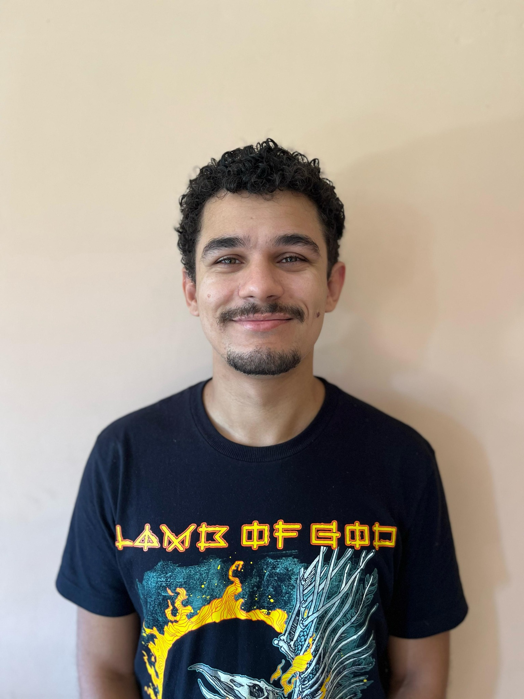
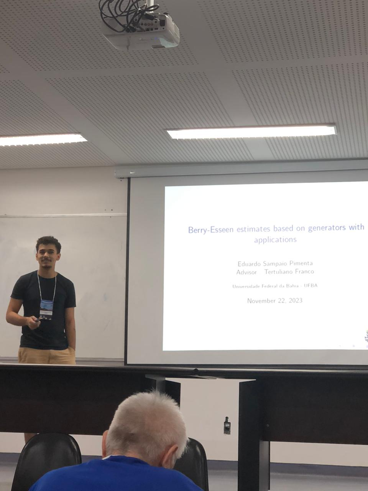

Mathematician · Probability Theory
Eduardo
Sampaio Pimenta
I study stochastic processes through scaling limits, random walks and their connections with Brownian motion.


2025PhD in Mathematics · UFBA
2025–26Postdoctoral research · Augsburg
math.PRProbability on arXiv
01
Academic profile
A
About
Background, academic interests and recent research experience.
BResearch
Scaling limits, boundary random walks, Feller processes and dynamic percolation.
CWorks
Five highlights and a complete list of papers, theses and talks.
DSimulations
Open-source code and numerical experiments supporting the research.
02
Selected work
Accepted · Forthcoming in Bernoulli Journal